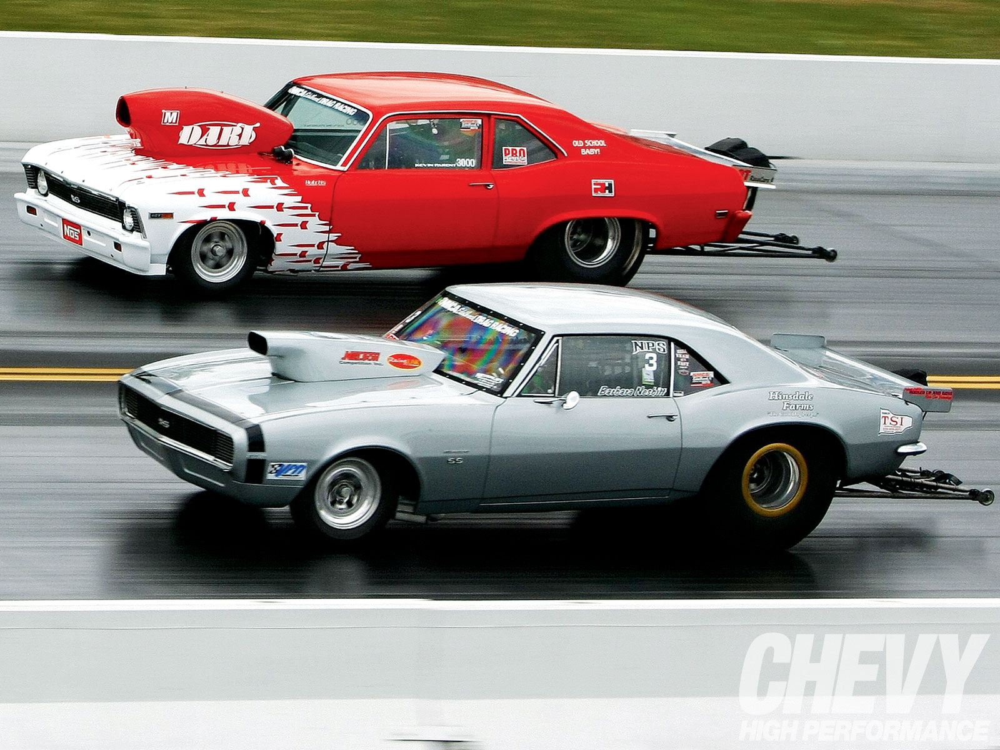
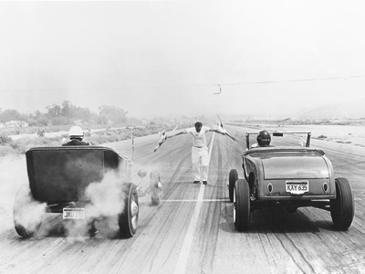

 Дрэг-рейсинг — гоночное соревнование, являющееся спринтерским заездом на дистанцию в 402 метра (¼ мили). Реже проводятся заезды на ½ мили (~804 м), 1/8 мили (201 м) либо на мерную милю (1609 м). По сути дрэг-рейсинг является гонкой на ускорение, проводящейся на прямой трассе. Особую популярность гонки этого типа снискали в США, где проводятся уже более полувека. Наиболее распространёнными дисциплинами являются гонки автомобилей, мотоциклов и катеров с поршневыми двигателями. Однако существуют соревнования для реактивных автомобилей и мотоциклов, электромобилей, скутеров, велосипедов и даже тракторов и газонокосилок.
 Такие известные и привычные для нас гонки по драг-рейсингу появились довольно давно. Некоторые утверждают, что официальная история драг-рейсинга началась в 1948 году на специально построенном для драг-рейсинга треке в калифорнийском городе Голета. Другие считают, что неофициальную летопись этого вида авто и мотоспорта можно вести с середины 20-х годов, когда на гладком дне высохшего озера Мохаве, что в Калифорнии, были проведены первые гонки.
Ездить тогда можно было на чем угодно: главное, чтобы средство передвижения имело мотор и колеса. Целью перегонов было развить максимальную скорость на определенной дистанции в одну четверть мили (402 метра). Видимо, 402 метра оказались оптимальной дистанцией для максимального ускорения, на которой, кроме того, можно ещё наблюдать и старт, и финиш гонщиков.